Intégration Home Assistant · HACS
Le rugby en direct dans Home Assistant
Score, essais, transformations, pénalités, drops, cartons et temps de jeu du Top 14, de la Champions Cup et de la Challenge Cup. Une animation plein écran à chaque action, et un retard réglable pour ne jamais voir l'essai avant ta TV.
- Gratuit, sans compte ni clé
- Configuration 100 % à la souris
- 5 cartes Lovelace incluses
Fonctionnement
De l'action sur le terrain à ton salon
Lecture des données
Pendant un match, toutes les 10 s, l'intégration lit le tableau d'affichage et le fil des actions d'ESPN. Hors match, elle ralentit toute seule.
Nettoyage
ESPN corrige souvent ses actions. Chacune est suivie par son équipe et son joueur : jamais de doublon, et un essai refusé est signalé comme annulé.
Retard anti-spoil
Les actions attendent dans une file le retard que tu as réglé : score, minute et animations restent calés sur ton écran.
Home Assistant
Des entités stables, des événements pour tes automatisations, et des cartes avec animations.
Le « direct » a ses limites : les données arrivent 40 à 65 s après l'action sur le terrain (mesuré en match réel). Elles sont saisies par des opérateurs, aucune source publique ne fait mieux.
Installation
Installer et configurer l'intégration
Il faut Home Assistant 2026.10 ou plus récent, et HACS. Les captures viennent d'un Home Assistant de test tout neuf, en français.
Étape 1
Ajouter le dépôt dans HACS
- Ouvre HACS, menu ⋮ en haut à droite, Dépôts personnalisés.
- Colle l'adresse ci-contre, choisis le type Intégration, puis Ajouter.
- Cherche Rugby Live dans HACS, Télécharger.
- Redémarre Home Assistant.
https://github.com/Kenny3231/rugby_live-haPas de compte, pas de clé d'API : la source est publique. Les cartes sont livrées avec l'intégration, il n'y a rien d'autre à installer.
Étape 2
Ajouter l'intégration
Paramètres → Appareils et services → Ajouter une intégration, puis tape « rugby ».

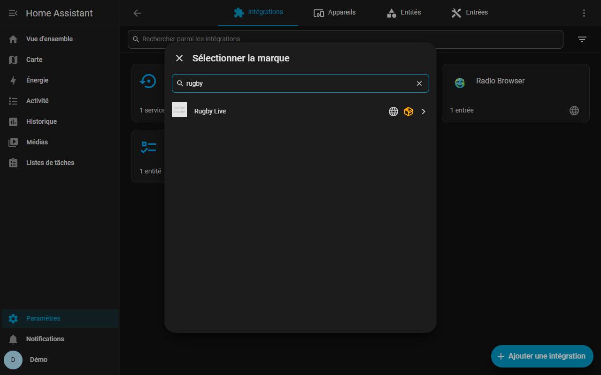
Étape 3
Choisir les compétitions
Top 14, Champions Cup, Challenge Cup : coche celles que tu veux suivre. Chacune aura son appareil avec tous les matchs du jour, le prochain match et un calendrier.

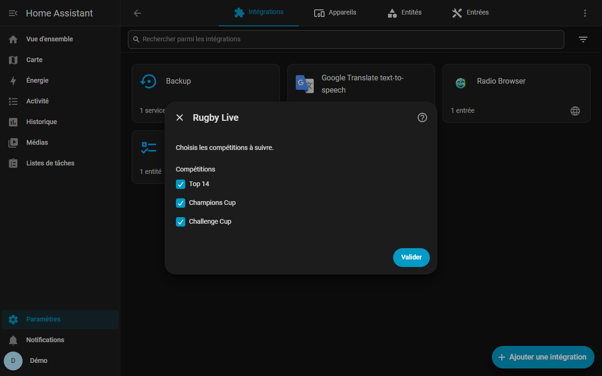
Étape 4
Tes équipes favorites
Facultatif. Chaque équipe choisie a son propre appareil : statut du match, score, minute, dernier événement, carton jaune en cours, prochain match. La liste est celle des compétitions cochées.

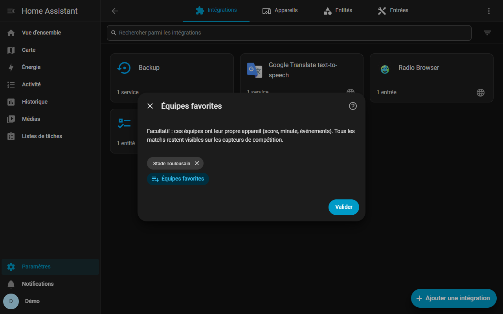
Étape 5
Les appareils créés
Home Assistant propose de ranger les appareils dans des pièces : inutile ici, Ignorer et terminer.
- Rugby Live : retard, bouton Calibrer, choix du match suivi, état de l'API.
- Match suivi : le match choisi (automatique : celui de ton équipe, sinon un match en direct), avec l'entité Animation.
- Une par équipe favorite et une par compétition.

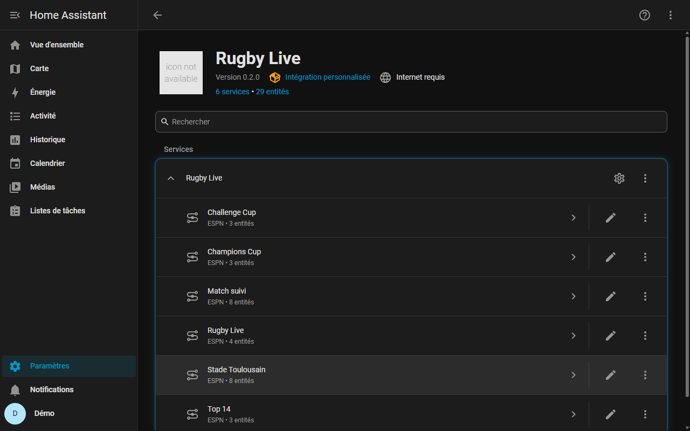
Étape 6
Les options
Roue dentée de l'intégration. Les valeurs par défaut conviennent ; ce qui peut servir :
- Compétitions et équipes favorites, modifiables à tout moment.
- Interrogation pendant un match (10 s minimum), avant le coup d'envoi, sans match.
- Durée d'une animation (20 s par défaut) et fond des animations pour chaque type d'action : rayons, ondes, projecteurs, confettis.
- Durée du carton jaune, remplacements publiés comme événements, calendrier des diffusions TV.

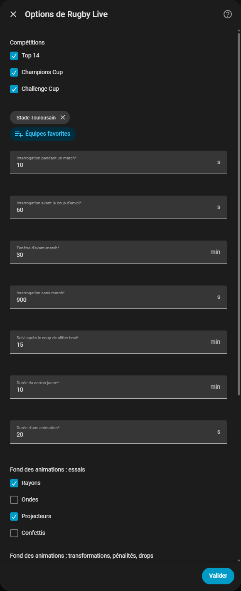
Tableau de bord
Mettre les cartes en place
Le plus rapide : partir du tableau de bord d'exemple, puis l'adapter avec l'éditeur visuel.
Étape 1
Créer le tableau de bord
- Paramètres → Tableaux de bord → Ajouter un tableau de bord, à partir de zéro, nomme-le « Rugby ».
- Ouvre-le, crayon (modifier), menu ⋮, Éditeur de configuration brute.
- Colle le contenu de examples/dashboard-cards.yaml et enregistre.
Les cartes trouvent toutes seules les entités de l'intégration. Seules les tuiles du retard citent des identifiants (en français) : à ajuster si ton Home Assistant est dans une autre langue.

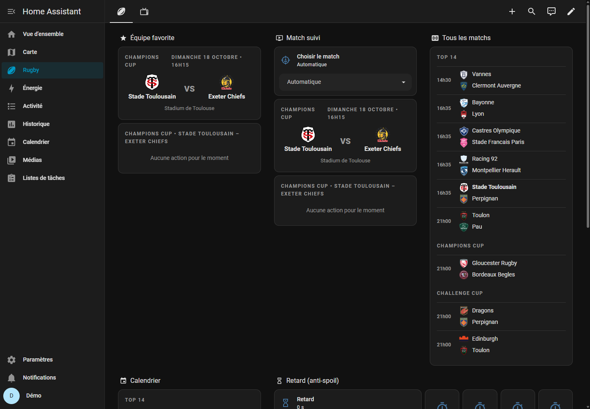
Étape 2
Ajouter une carte
En mode modification, + dans une section, onglet Par carte, tape « rugby live ». Les 5 cartes sont là :
- Direct : score plein écran, bandeau des autres matchs, animations.
- Score : le match de ton équipe, compteurs, cartons.
- Fil du match, Multiplex (tous les matchs du jour) et Calendrier.

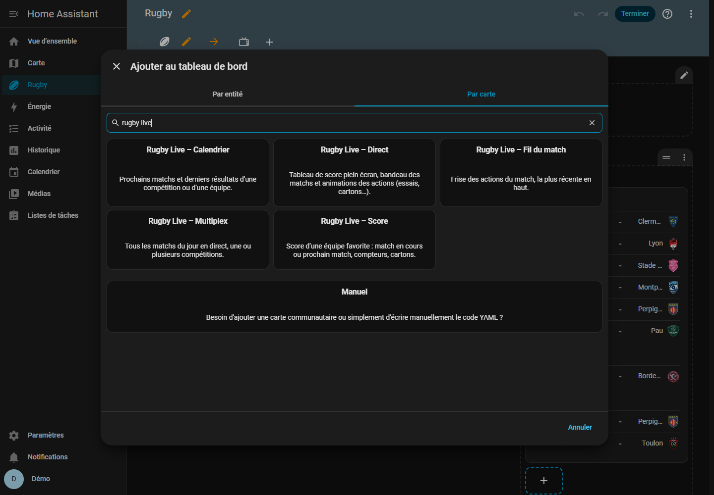
Étape 3
Régler la carte
Tout se règle dans l'éditeur visuel, avec l'aperçu à droite. Un seul choix : une de tes équipes favorites (son match du moment, sinon son prochain match, toutes compétitions confondues) ou Match suivi (le match choisi dans son sélecteur). Vide : ta première équipe favorite.
« Animer même si l'appareil demande moins d'animations » : utile si Windows ou ta tablette a les effets d'animation désactivés, sinon les animations sont simplifiées.

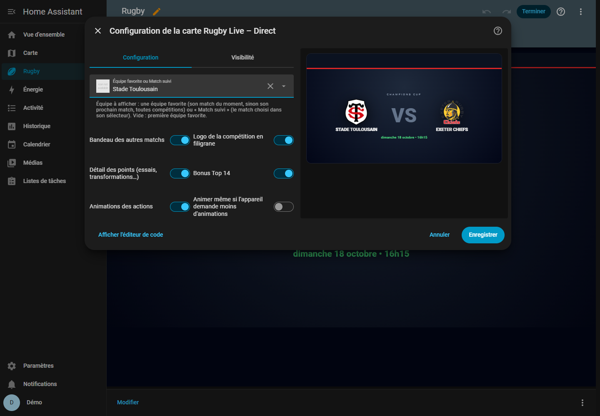
Étape 4
Plein écran pour la TV ou la tablette
Le tableau de bord d'exemple a une seconde vue « Direct » de type Panneau : la carte prend tout l'écran. Hors match, elle annonce le prochain match de ton équipe.
- title: Direct
type: panel
cards:
- type: custom:rugby-live-direct-card
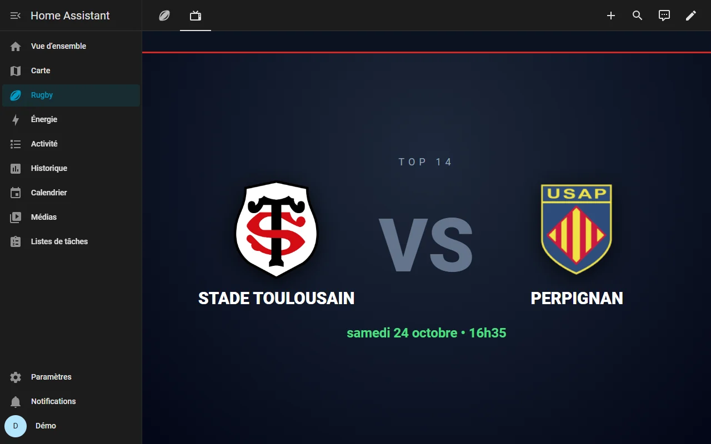
Pendant un match
Ce que tu verras le jour du match
Captures de la démo, qui rejoue la finale du Top 14 2025, Stade Toulousain – Bordeaux Bègles, avec les vraies cartes : vrais joueurs, logos officiels et photos détourées de la LNR, comme dans Home Assistant.
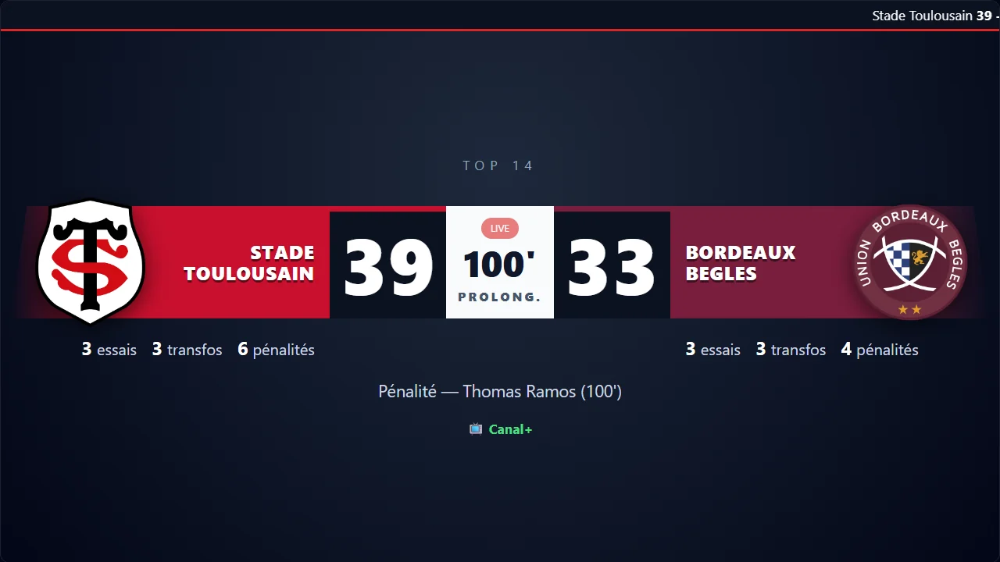
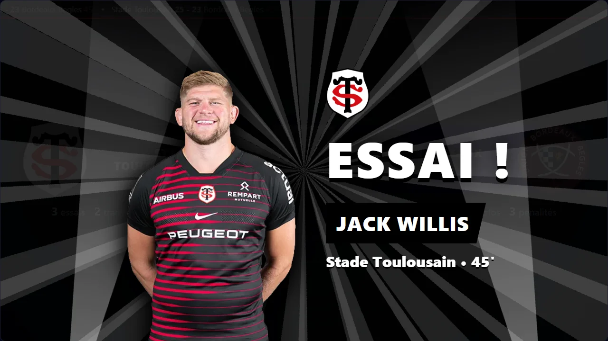
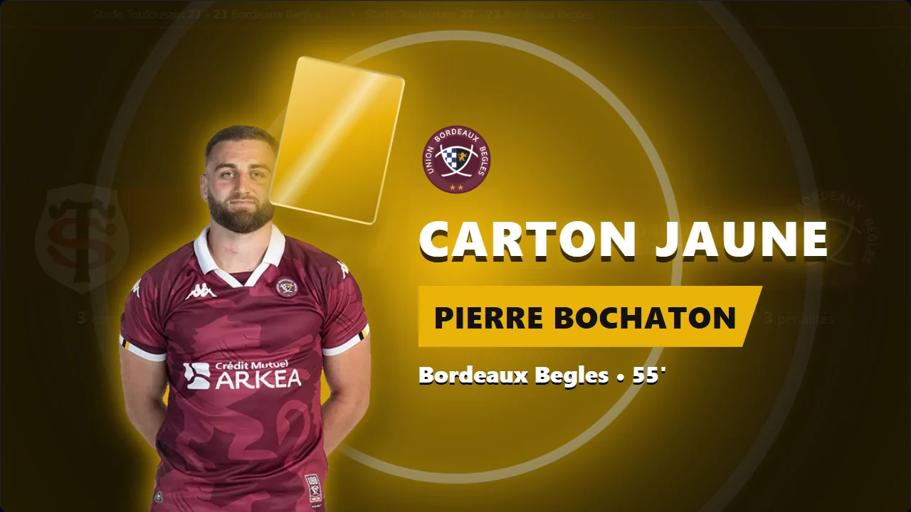
Retard anti-spoil
Caler les données sur ta TV
Une box, myCanal ou un autre flux a son propre retard. Le retard de l'intégration retient les données pour qu'elles arrivent en même temps que l'image.
- Pendant un match, laisse le retard à 0.
- Quand une action affichée par Home Assistant apparaît à ta TV, appuie sur Calibrer le retard (appareil Rugby Live) : le retard devient le temps écoulé depuis que l'intégration a vu cette action.
- Ajuste au besoin avec l'entité Retard ou le service
rugby_live.set_delay.
Le retard ne peut que retenir les données, pas les avancer : si ta TV montre l'action avant que les données arrivent, le bon réglage est 0.

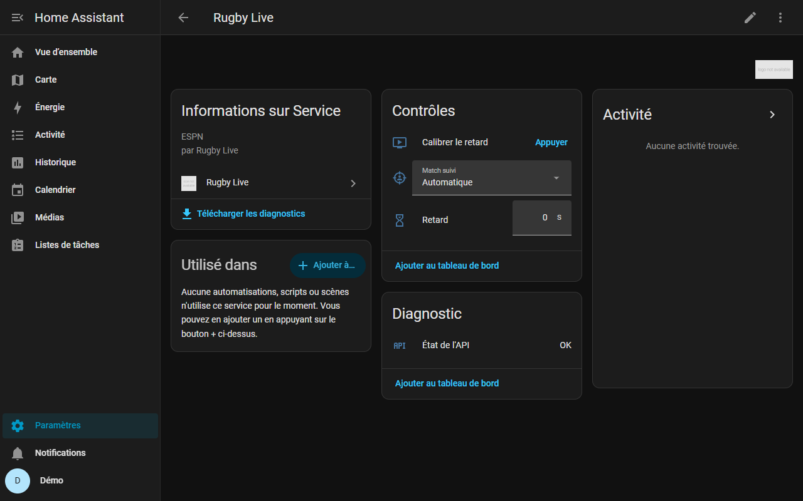
Automatisations
Déclencher ce que tu veux à chaque essai
Chaque action envoie l'événement rugby_live_event, après le retard réglé. Dans une automatisation : déclencheur
Événement manuel reçu, type rugby_live_event, et filtre dans les données.
| Événement | Quand |
|---|---|
rugby_live_event | Après le retard : ce que tu vois. |
rugby_live_event_raw | Dès que l'intégration voit l'action. |
rugby_live_event_revoked | Une action publiée a été annulée. |
Données : type (try, conversion, penalty_goal, drop_goal,
yellow_card, red_card, kickoff, half_time, full_time…),
team_id, team_name, player, minute, score_home, score_away,
favorite.

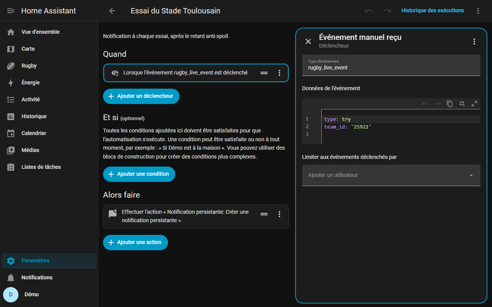
# Lumière rouge qui clignote à chaque essai du Stade Toulousain
triggers:
- trigger: event
event_type: rugby_live_event
event_data: { type: try, team_id: "25922" }
actions:
- action: light.turn_on
target: { entity_id: light.salon }
data: { rgb_color: [220, 0, 0], flash: short }Bon à savoir
Les limites, honnêtement
Source non officielle
L'API publique d'ESPN n'est pas documentée. Usage personnel, requêtes modérées (au plus une par seconde). Elle peut changer sans préavis.
Quasi direct
40 à 65 s de décalage avec le terrain, comme toutes les sources publiques gratuites.
Trois compétitions
Top 14, Champions Cup et Challenge Cup. Une autre ligue ESPN peut s'ajouter par son identifiant, sans garantie.
Photos des joueurs
Top 14 : base publique de la LNR. Champions Cup et Challenge Cup : compositions publiées par l'EPCR (environ deux jours avant le match). Sans photo, l'animation affiche le logo du club.